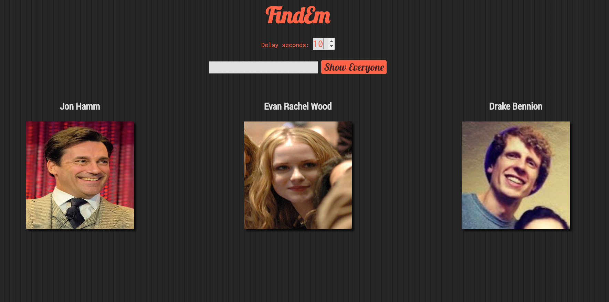
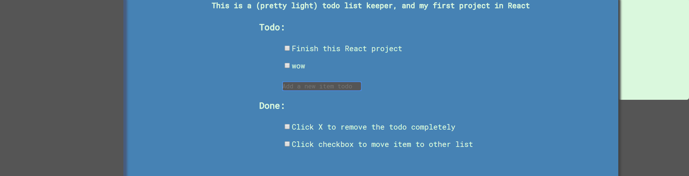

<div id="projects">
    <a target="_blank" href="https://frozen-wave-70629.herokuapp.com/">
        <aside>
            <h3>Article Summarizer</h3>
            <p>My first attempt at Natural Language Processing, using Javascript.
                Still in progress, but the idea is you'll be able to enter an 
                article and extract some important sentences to make a summary.
                This is done a little simplistically right now -- ignoring "stopwords", like "it, a, I, me...etc", 
                it assigns a "weight" to each word, based on the frequency the word occurs, then chooses the top 3 most important sentences,
                based on the sum of the weights of each word sentence. 
            </p>
            <p>I know, what you're probably wondering: "doesn't that just mean the longest sentence will probably be considered the most 'important', 
                assuming it doesn't have too many stopwords in it?" The answer is "yes and no". Yes, that is absolutely correct. No, I'm not done with it yet :)
            </p>
            <h4><a href="https://github.com/drakeywakey/abstractExtract">Source code</a></h4>
        </aside>
    </a>
    <a target="_blank" href="https://drakeywakey.github.io/people">
        <aside>
            
            <h3>FindEm</h3>
            <p>An Angular project, the idea is basically just a searchable catalog of people.
                You can increase the time it takes to populate the list, simulating
                a delay from the server, showing a way I thought the UI could act "gracefully" during the wait.
            </p>
            <h4><a href="https://github.com/drakeywakey/FindEmTests">Source code</a></h4>
        </aside>
    </a>
    <a target="_blank" href="https://drakeywakey.github.io/Reactodo">
        <aside id="Reactodo">
            
            <h3>Reactodo</h3>
            <p>Possibly the "Hello World" of web development, here's a todo list keeper, written in React.
                It was also my first use of CSS grid! (if your browser supports it, otherwise it falls back to flexbox)
                Uses local storage on the browser to persist data
            </p>
            <h4><a href="https://github.com/drakeywakey/Reactodo">Source code</a></h4>
        </aside>
    </a>
</div>